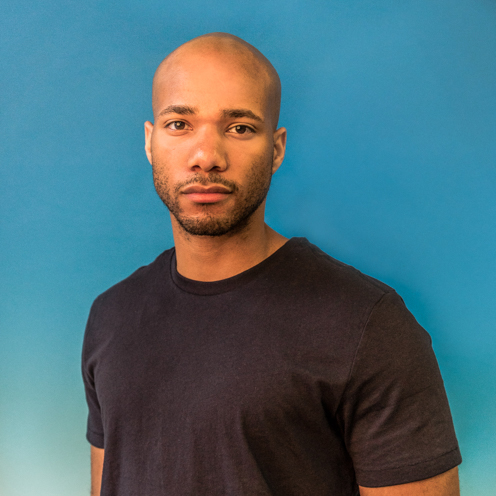

David White
Associate Director & Producer
I’m David White and I’m a self taught screenwriter and cinematographer with an emphasis on Film Directing. I began making short films at 16, and I currently make commercials and promo videos. I studied acting and motion picture editing at the University of Connecticut, where I made my thesis film “Waiting For Nick”. I focus on the complexities and hardships of the human society in my work. Wishing to spark healthy discussions, I often select film topics that have a high level of controversy or social activism. I look forward to working on this show and to collaborate with a fantastic cast and crew.